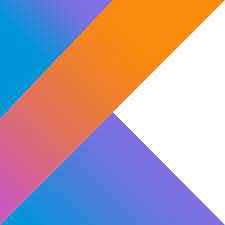

웹사이트 개발 등에 사용되는 프로그래밍 언어
각 분야에 사용되는 다른 언어들 바로가기
| Web Programming | App Programming | Game Programming | System Programming | |||
| JavaScript | JAVA | Kotlin | Swift | C++ | Python | C |
 |
 |
 |  |
 |
 |
 |
 |
 |
 |
 |
 |
|
|
모질라 재단의 프로토타입 기반의 프로그래밍 언어로, 스크립트 언어에 해당된다. 특수한 목적이 아닌 이상 모든 웹 브라우저에 인터프리터가 내장되어 있다. 오늘날 HTML, CSS와 함께 웹을 구성하는 요소 중 하나다. HTML이 웹 페이지의 기본 구조를 담당하고, CSS가 디자인을 담당한다면 JavaScript는 클라이언트 단에서 웹 페이지가 동작하는 것을 담당한다. 웹 페이지를 자동차에 비유하자면, HTML은 자동차의 뼈대, CSS는 자동차의 외관, JavaScript는 자동차의 동력이라고 볼 수 있다.
썬 마이크로시스템즈(현재 오라클)에서 개발한 Java와는 별 관계가 없는 언어이다. 이름이 비슷하다고 같은 언어가 아니다. 사람들이 흔히 헷갈리는 부분 중 하나.
실질적인 구동 방식도 JVM을 이용해서 돌리는 Java와, 브라우저 내에 스크립트 엔진(인터프리터)이 존재하는 JavaScript는 완전히 다르다.
날코딩 항목에서 서술되어 있듯, 웹 개발자들은 다양한 마크업 언어 및 프로그래밍 언어를 사용하기 때문에 통합 개발 환경보다는 텍스트 에디터를 사용하는 경우가 많다. 크롬이나 파이어폭스에서는 개발자 도구를 지원하여 브라우저에서 개발을 돕기도 한다. 텍스트 에디터로는 그냥 메모장을 사용하는 사람들도 있지만 EditPlus, UltraEdit, Notepad++가 주로 사용되었다. 통합 개발 환경이 필요하다면 JetBrains의 WebStorm이 권장되는데 이는 유료이다. 이클립스의 JavaScript Development Tools는 무료. 허나 이클립스의 무거움은 그대로 가지고 있다. 최근에는 GitHub의 Atom, MS의 Visual Studio Code, Adobe의 Brackets 등의 오픈소스 에디터도 출시되고 있다. 해외의 경우 99프로 가까이 비주얼 스튜디오 코드를 쓰는 만큼 웹 개발에 비주얼 스튜디오 코드는 사실상 업계 표준이다. 자세한 내용은 텍스트 에디터 참고.
부모자식의 구분도 없으며, 메인메소드같은것도 없고, 클래스-인스턴스 관계도 없으며, 모든 펑션이 클래스도 될수있으며 인스턴스도 될수 있기 때문에 모든 함수가 따로놀기에 따라서 객체지향처럼 "서로 맞물리는" 것을 기대할수도 없다(그런 이유로 클로저개념이 존재한다). 이 특성을 잘 이해해야 한다. 오히려 순서대로 읽는 절차지향/객체지향 언어보다는 모든요소가 각자 따로 움직이는 스타크래프트 맵에디터 스크립트에 더 가까운 개념으로 이해해야 한다. 로드는 순서대로지만 실행은 동시실행이다.
JavaScript는 C에서 영향을 받은 C-Family 언어로 기본적인 문법이 유사 중괄호로 구분하는 블럭, 세미콜론으로 줄이 끝남을 알리는 것, 변수 쓰는 법, 연산자 사용법 등 기초적인 문법이 C 문법과 크게 다르지 않다. 호이스팅 같은것도 C언어의 잔재이다. 무엇보다 다른언어 쓰다온 사람들을 힘들게 하는건 클래스와 메소드가 외관으로 구분이 안된다라는거다.
진입 장벽은 낮지만 실제 사용하려면 모든 언어가 그렇듯 어렵다. 특히 다른 언어와 비교했을 때 상상도 못할 독특한 특징들이 많은 언어이다. 가장 대표적인 것이 객체(Object)의 상수(const) 개념이다. 객체의 경우 상수로 선언해도 메모리값만 상수일 뿐 객체 안의 내용은 변경이 가능하다. 즉 객체가 저장된 공간을 가리키는 정보만 상수일뿐 그 객체의 정보 자체는 변경이 가능하다. 이런 이유로 JavaScript에서 객체는 변수로 선언할 이유가 없으며 거의 모든 케이스에서 상수로 선언하는게 일반적이다.
jQuery: DOM Manipulating 라이브러리. 사실상 자바스크립트 개발에 필수였던 라이브러리였으나 리액트, 앵귤러 등의 프레임워크의 생산성이 워낙 높다 보니
2010년대 후반부터는 사실상 레거시가 되었으며 아주 간단한 웹사이트에서만 쓰이고 안쓰는 추세다. 기본적으로 document.querySelectorAll('oooo')를 $('oooo')로 쓸 수 있는 등의 기능이 있다.
Vue.js: 중국계 미국인 에반 유가 만든 사용자 인터페이스를 만들기 위한 프론트엔드용 프레임워크이다.
굉장히 자유롭고 유연하게 추가 기능들을 불러올 수 있다는 특징이 있으나 추가 기능들을 무분별하게 사용하는 경우 안정성을 떨어뜨릴 수 있다.
Node.js: 브라우저 안에서만 작동하던 JavaScript를 브라우저 외의 환경에서 작동할 수 있게 만들어 준 런타임 환경이다.
TypeScript: 마이크로소프트에서 발표한 JavaScript에 정적 타입 개념을 추가한 신형 언어. CoffeeScript와 마찬가지로 컴파일 결과는 JavaScript이다. 약타입 언어인 JavaScript 타입 시스템의 구멍을 메우기 위해 나왔다. 그렇게 강타입 언어가 된 TypeScript는 코드의 견고함을 강점으로 내세우고 있다. 현재는 Angular 2 이후에서 이 언어를 채택하면서 많이 사용되기 시작했다. ECMAScript 2015 표준도 구현되어 있으며 순수한 JavaScript와 문법적인 차이가 적다. 마이크로소프트에서 만들었다보니 마이크로소프트 편집기인 Visual Studio Code에서 변수 타입이나 오류에 관한 피드백을 즉각즉각 해 주어서 버그 방지에 유용하다.
CoffeeScript: JavaScript의 문법을 개선한 신형 언어. 컴파일 결과로 JavaScript 코드를 내보낸다. 기존 JavaScript의 설계 결함을 극복할 목적으로 만들어졌다.
그러나 Python처럼 들여쓰기로 코드 블록을 구분하는 문법을 채택해 호불호가 갈리는 편이다. 2017년 말에는 '불호' 쪽으로 많이 기울어 있는 상황이다.